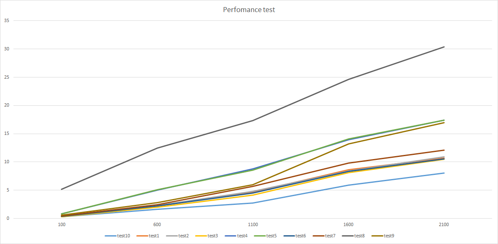

Чтобы обобщить другие ответы и объединить их с тем, что я знаю, я нашел 10 основных способов сделать это (см. Ниже). Кроме того, я написал несколько тестов производительности (см. Результаты ниже). Например, если мы хотим найти сумму всех ключей и значений карты, мы можем написать:
long i = 0;
Iterator<Map.Entry<Integer, Integer>> it = map.entrySet().iterator();
while (it.hasNext()) {
Map.Entry<Integer, Integer> pair = it.next();
i += pair.getKey() + pair.getValue();
}
long i = 0;
for (Map.Entry<Integer, Integer> pair : map.entrySet()) {
i += pair.getKey() + pair.getValue();
}
final long[] i = {0};
map.forEach((k, v) -> i[0] += k + v);
long i = 0;
for (Integer key : map.keySet()) {
i += key + map.get(key);
}
long i = 0;
Iterator<Integer> itr2 = map.keySet().iterator();
while (itr2.hasNext()) {
Integer key = itr2.next();
i += key + map.get(key);
}
long i = 0;
for (Iterator<Map.Entry<Integer, Integer>> entries = map.entrySet().iterator(); entries.hasNext(); ) {
Map.Entry<Integer, Integer> entry = entries.next();
i += entry.getKey() + entry.getValue();
}
final long[] i = {0};
map.entrySet().stream().forEach(e -> i[0] += e.getKey() + e.getValue());
final long[] i = {0};
map.entrySet().stream().parallel().forEach(e -> i[0] += e.getKey() + e.getValue());
long i = 0;
MapIterator<Integer, Integer> it = iterableMap.mapIterator();
while (it.hasNext()) {
i += it.next() + it.getValue();
}
final long[] i = {0};
mutableMap.forEachKeyValue((key, value) -> {
i[0] += key + value;
});
Тесты производительности (режим = Среднее время, система = Windows 8.1 64-бит, Intel i7-4790 3,60 ГГц, 16 ГБ)
Benchmark Mode Cnt Score Error Units
test3_UsingForEachAndJava8 avgt 10 0.308 ± 0.021 µs/op
test10_UsingEclipseMap avgt 10 0.309 ± 0.009 µs/op
test1_UsingWhileAndMapEntry avgt 10 0.380 ± 0.014 µs/op
test6_UsingForAndIterator avgt 10 0.387 ± 0.016 µs/op
test2_UsingForEachAndMapEntry avgt 10 0.391 ± 0.023 µs/op
test7_UsingJava8StreamApi avgt 10 0.510 ± 0.014 µs/op
test9_UsingApacheIterableMap avgt 10 0.524 ± 0.008 µs/op
test4_UsingKeySetAndForEach avgt 10 0.816 ± 0.026 µs/op
test5_UsingKeySetAndIterator avgt 10 0.863 ± 0.025 µs/op
test8_UsingJava8StreamApiParallel avgt 10 5.552 ± 0.185 µs/op
Benchmark Mode Cnt Score Error Units
test10_UsingEclipseMap avgt 10 37.606 ± 0.790 µs/op
test3_UsingForEachAndJava8 avgt 10 50.368 ± 0.887 µs/op
test6_UsingForAndIterator avgt 10 50.332 ± 0.507 µs/op
test2_UsingForEachAndMapEntry avgt 10 51.406 ± 1.032 µs/op
test1_UsingWhileAndMapEntry avgt 10 52.538 ± 2.431 µs/op
test7_UsingJava8StreamApi avgt 10 54.464 ± 0.712 µs/op
test4_UsingKeySetAndForEach avgt 10 79.016 ± 25.345 µs/op
test5_UsingKeySetAndIterator avgt 10 91.105 ± 10.220 µs/op
test8_UsingJava8StreamApiParallel avgt 10 112.511 ± 0.365 µs/op
test9_UsingApacheIterableMap avgt 10 125.714 ± 1.935 µs/op
Benchmark Mode Cnt Score Error Units
test1_UsingWhileAndMapEntry avgt 10 1184.767 ± 332.968 µs/op
test10_UsingEclipseMap avgt 10 1191.735 ± 304.273 µs/op
test2_UsingForEachAndMapEntry avgt 10 1205.815 ± 366.043 µs/op
test6_UsingForAndIterator avgt 10 1206.873 ± 367.272 µs/op
test8_UsingJava8StreamApiParallel avgt 10 1485.895 ± 233.143 µs/op
test5_UsingKeySetAndIterator avgt 10 1540.281 ± 357.497 µs/op
test4_UsingKeySetAndForEach avgt 10 1593.342 ± 294.417 µs/op
test3_UsingForEachAndJava8 avgt 10 1666.296 ± 126.443 µs/op
test7_UsingJava8StreamApi avgt 10 1706.676 ± 436.867 µs/op
test9_UsingApacheIterableMap avgt 10 3289.866 ± 1445.564 µs/op
Графики (тесты производительности в зависимости от размера карты)

Таблица (тесты производительности в зависимости от размера карты)
100 600 1100 1600 2100
test10 0.333 1.631 2.752 5.937 8.024
test3 0.309 1.971 4.147 8.147 10.473
test6 0.372 2.190 4.470 8.322 10.531
test1 0.405 2.237 4.616 8.645 10.707
test2 0.376 2.267 4.809 8.403 10.910
test7 0.473 2.448 5.668 9.790 12.125
test9 0.565 2.830 5.952 13.220 16.965
test4 0.808 5.012 8.813 13.939 17.407
test5 0.810 5.104 8.533 14.064 17.422
test8 5.173 12.499 17.351 24.671 30.403
Все тесты проводятся на GitHub.